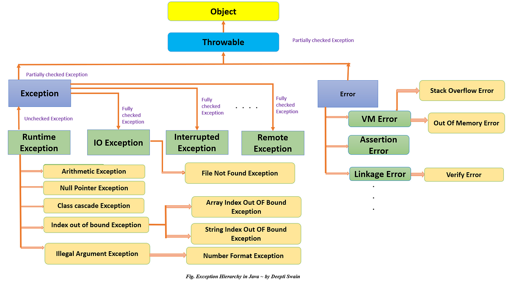

Java Exception Handling
✔ What is an Error and Exception:
• An Exception represents issues that can occur during the execution of a program, but can be anticipated and handled in the code.
• It is a recoverable condition.
• An Error represents serious problems that arise during program execution that cannot be handled by application code.
• These are unrecoverable conditions that typically indicate something wrong with the JVM or system environment.
| Feature / Criteria | Exception | Error |
|---|---|---|
| Type | Represents conditions that a program should handle | Represents conditions that a program cannot handle |
| Hierarchy | Subclass of java.lang.Throwable → Exception | Subclass of java.lang.Throwable → Error |
| Recoverable? | ✔ Yes (e.g., file not found, invalid input) | ✗ No (e.g., memory crash, JVM errors) |
| Handled in code? | ✔ Yes — using try-catch or throws | ✗ No — not recommended to handle |
| Examples | IOException , NullPointerException , SQLException | OutOfMemoryError , StackOverflowError , LinkageError |
| Common Causes | Faulty logic, external resources | JVM failure, system resources exhausted |
| Program can continue? | ✔ Yes, if handled properly | ✗ No, usually causes program to terminate |
| Thrown by developer? | Yes — can be thrown using throw new Exception() | Rare — Errors are thrown by the JVM |
| Best Practice | Catch and handle in code | Avoid catching; investigate root cause instead |
✔️ 1. What is an Exception?
An exception is an unwanted or unexpected event that disrupts the normal flow of the program during runtime.
Exception handling in Java is a mechanism to handle runtime errors, allowing the program to continue normal flow.
An exception is an unwanted or unexpected event that disrupts the normal flow of the program during runtime.
Why Exceptions:
Without exception handling, runtime errors like NullPointerException or ArithmeticException will crash the program. Exception handling allows the application to catch errors and continue running or inform the user appropriately.
Separates normal business logic from error-handling logic. This makes code more readable and maintainable.
Java allows exceptions to bubble up through the call stack, enabling centralized error management (e.g., in web controllers or APIs).
Stack traces give detailed information about what went wrong and where, making debugging easier.
You can define domain-specific exceptions to represent meaningful business errors.
2. Hierarchy of Exception Classes
3. Types of Exceptions
Types of Exceptions:
1. Checked Exceptions – Checked at compile-time (e.g., IOException, SQLException )
2. Unchecked Exceptions – Checked at runtime (e.g., NullPointerException, ArithmeticException )
3. Errors – Severe issues not meant to be handled (e.g., OutOfMemoryError )
1. Checked Exception (Compile-Time)
Handled during compilation. Example:
• IOException
• SQLException
• FileNotFoundException
A checked exception is an exception that is checked at compile-time.
The Java compiler forces you to either:
• Handle it using try-catch, or
• Declare it using throws.
If you don't, your code won't compile.
Why Checked Exceptions Exist:
- They represent recoverable, external problems that are not programming errors.
- Encourage developers to handle failure situations responsibly (like missing files, database errors, etc.)
2. Unchecked Exception (Runtime)
Not checked at compile time. Example:
- ArithmeticException
- NullPointerException
- ArrayIndexOutOfBoundsException
An unchecked exception is an exception that is not checked at compile-time.
They occur at runtime due to logic errors or bad input.
Java does not force you to handle them or declare them in your method.
| Criteria | Checked Exceptions | Unchecked Exceptions |
|---|---|---|
| Definition | Exceptions that are checked at compile-time. | Exceptions that occur at runtime and are not checked at compile-time. |
| Hierarchy | Subclass of java.lang.Exception (but not RuntimeException). | Subclass of java.lang.RuntimeException. |
| Examples | IOException, SQLException, ClassNotFoundException, | NullPointerException, ArithmeticException, |
| FileNotFoundException | ArrayIndexOutOfBoundsException | |
| Compile-time Check | ✔ Required — must be either caught or declared with throws. | ✗ Not required — compiler does not force you to handle them. |
| Need to Declare in Method | ✔ Yes — using throws keyword if not caught. | ✗ No need to declare or catch. |
| When They Occur | Detected during compilation. | Detected during program execution. |
| Typical Use Case | External conditions (e.g., file I/O, database access, network issues). | Programming errors or bugs (e.e.g., null values, invalid array index). |
| Can be caught using try-catch | ✔ Yes | ✔ Yes |
| Must be handled by developer? | ✔ Yes — or program won't compile. | ✗ No — but recommended when necessary. |
| Are they recoverable? | ✔ Often — represents conditions the application can recover from. | ✗ Usually not — indicates bugs that need to be fixed in code. |
| Impact on program design | Forces better error handling and robust code. | Cleaner code but risk of runtime failures if not handled properly. |
| Best Practice | Handle using try-catch or declare using throws. | Avoid by fixing logic, validate inputs, and null-checks. |
| Used For | Situations beyond the control of program logic. | Situations under the control of program logic. |
| Performance Difference | No significant difference. | No significant difference. |
| Custom Exception Inheritance | Extend Exception class. | Extend RuntimeException class. |
4. Throw vs Throws
throw is a keyword used to manually throw an exception.
To create and throw an exception explicitly in code.
- Only one exception can be thrown at a time.
- You must use new to instantiate the exception object.
- Can throw both checked and unchecked exceptions.
- If a checked exception is thrown, it must be handled or declared using throws.
throws is a keyword used to declare exceptions that a method might throw.
To inform the caller of the method about the exceptions that might occur.
- Used only in method signatures.
- Can declare multiple exceptions, separated by commas.
- Mainly used for checked exceptions.
- Helps in propagating exceptions to the calling method.
| Criteria | throw | throws |
|---|---|---|
| Purpose | Used to explicitly/Manually throw an exception from a method or block | Used to declare exceptions that a method might throw |
| Usage Location | Inside a method or block | In method signature (after method name and before ) |
| Number of Exceptions | Can throw only one exception at a time | Can declare multiple exceptions, separated by commas |
| Syntax | throw new ExceptionType("message"); | void method() throws IOException, SQLException { ... } |
| When it acts | Occurs at runtime | Acts at compile-time for checked exceptions |
| Followed by | Always followed by an instance of Throwable class or its subclass | Followed by exception class names |
| Instantiation Required | ✔ Yes — needs to create object using new | ✗ No — just mentions exception types that may be thrown |
| Control Transfer | Immediately exits from the method/block | Does not transfer control — just informs the caller |
| Can it throw checked exception? | ✔ Yes, but must be handled or declared | ✔ Yes, used to declare checked exceptions |
| Example | throw new IOException("File not found"); | public void readFile() throws IOException |
| Common Use Case | To manually trigger an exception | To propagate exception handling responsibility to the caller |
✤ 5. Exception Handling Keywords
| Keyword | Description |
|---|---|
| try | Encapsulates code that might throw an exception |
| catch | Defines block to handle the exception |
| finally | • Executes always after try/catch (block is designed for cleanup and will almost always execute.) Java 7 introduced the try-with-resources concept for automatic resource management, eliminating the need for an explicit finally block for cleanup. |
| throw | Used to throw exception manually |
| throws | Declares exceptions that method can throw |
6. Basic Syntax Example
public class Example {
public static void main(String[] args) {
try {
int data = 10 / 0;
} catch (ArithmeticException e) {
System.out.println("Caught: " + e);
} finally {
System.out.println("Always executes");
}
}
}
7. Multiple Catch Blocks
try {
String str = null;
System.out.println(str.length());
} catch (ArithmeticException e) {
System.out.println("Arithmetic Exception");
} catch (NullPointerException e) {
System.out.println("Null Pointer Exception");
}
8. Nested Try Block
try {
try {
int b = 39 / 0;
} catch (ArithmeticException e) {
System.out.println("Inner catch: " + e);
}
} catch (Exception e) {
System.out.println("Outer catch: " + e);
}
9. Finally Block Example
try {
int a = 10 / 2;
System.out.println(a);
} catch (Exception e) {
System.out.println("Error occurred");
} finally {
System.out.println("Finally block always runs");
}
10. Throw Keyword Example
public class Test {
static void validate(int age) {
if (age < 18)
throw new ArithmeticException("Not valid to vote");
else
System.out.println("Welcome to vote");
}
public static void main(String args[]) {
validate(16);
}
}
11. Throws Keyword Example
import java.io.*;
public class Test {
void readFile() throws IOException {
FileReader file = new FileReader("abc.txt");
BufferedReader fileInput = new BufferedReader(file);
System.out.println(fileInput.readLine());
}
public static void main(String args[]) throws IOException {
Test obj = new Test();
obj.readFile();
}
}
12. Custom Exception
class MyException extends Exception {
MyException(String message) {
super(message);
}
}
public class Test {
static void checkAge(int age) throws MyException {
if (age < 18)
throw new MyException("Age must be 18 or above");
else
System.out.println("Access granted");
}
public static void main(String[] args) {
try {
checkAge(16);
} catch (MyException e) {
System.out.println("Caught: " + e.getMessage());
}
}
}
13. Try-with-Resources (Java 7+)
Automatically closes the resource.
import java.io.*;
public class TryWithResource {
public static void main(String[] args) {
try (BufferedReader br = new BufferedReader(new FileReader("file.txt"))) {
System.out.println(br.readLine());
} catch (IOException e) {
System.out.println("Exception: " + e.getMessage());
}
}
}
14. Exception Propagation
public class Propagation {
void method1() {
int data = 50 / 0;
}
void method2() {
method1();
}
void method3() {
try {
method2();
} catch (Exception e) {
System.out.println("Exception handled");
}
}
public static void main(String args[]) {
Propagation obj = new Propagation();
obj.method3();
}
}
15. Best Practices
- Catch specific exceptions, not generic Exception .
- Always close resources (use try-with-resources).
- Avoid empty catch blocks.
- Don't suppress exceptions silently.
- Document exceptions using @throws in Javadoc.
1. Can a try block exist without a catch block, only with finally?
Answer: Yes.
Detail: "whenever you are creating a tri block till Java 7... it should contain finally block... you can skip the catch block but it should contain finely block." After Java 7 (Java 8 onwards), try-with-resources allows a try block to exist without either catch or finally because it "will automatically take care of closing the resource." This feature helps "avoid the memory leak in Java code."
2. What is the return value when both try and finally blocks have return statements?
Answer: The finally block's return value takes precedence.
Detail: "whatever you are returning from finally right that will take a precedence or the try clutch."
3. What happens if a variable is updated in try and then in finally, but only try has a return statement?
Answer: The value returned from the try block is returned, even if the variable is modified in finally .
Detail: "this x=1 is stored in the stack memory so this x=2 will not take into account so x=2 whatever the assignment we are making it will not take into precedence." The try 's return value is "already stored in the stack." However, if finally also has a return statement, its return value would take precedence.
4. Are nested try-catch blocks allowed?
Answer: Yes.
Detail: "nested TR catch blocks are allowed so it is hand it is used to handle the different exceptions at different levels."
5. When will a finally block not be executed?
Answer: If the `try` or `catch` block contains `System.exit()`.
Detail: "if try or catch block contains system.exit then finally will not be executed... because system. exit means that is an end so no further execution happens."
6. Difference between final, finally, and finalize:
final: Keyword for variables (constant), methods (cannot be overridden), and classes (cannot be inherited).
finally: Used with `try-catch` for cleanup, "regardless of whether exception is thrown in the try it will be executed."
finalize: "It is called by garbage collector before an object is removed from the memory."
Note: `finalize()` is deprecated since Java 9 and removed in Java 18+. Use `AutoCloseable` or `try-with-resources` instead.
7. How to handle multiple exceptions in a single catch block?
Answer: Use the pipe ( | ) symbol to separate exception types.
Detail: "we have to basically use pipe symbol between different exception." This is an efficient way unless "your requirement is each exception should be logged in a different way."
8. Difference between Error and Exception:
Error: "System level issues... beyond our programs control" (e.g., `OutOfMemoryError`, `StackOverflowError`. Generally "unrecoverable" and "unpredictable." "we don't need to catch this errors."
Exception: "Arise like within the application code itself" (e.g., `IOException`, `NullPointerException`. Generally "recoverable" and "can be anticipated." "we can have the proper TR catch blocks we can catch it we can handle it gracefully." Exceptions can be checked (compile-time) or unchecked (runtime). Both `Error` and `Exception` extend `Throwable`.